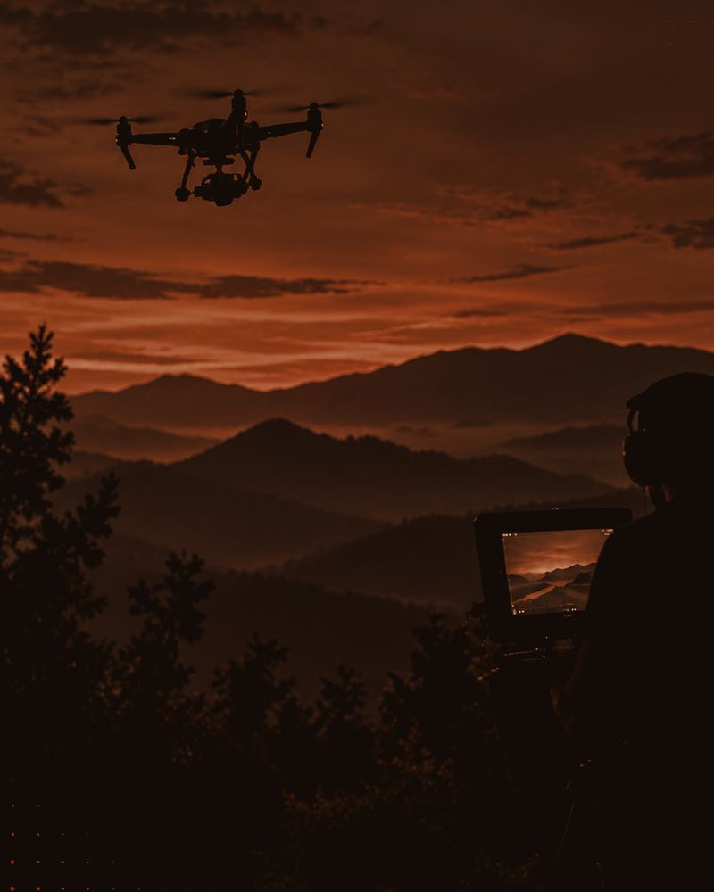
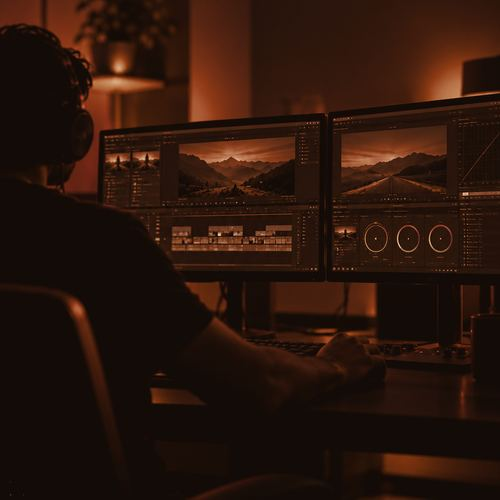
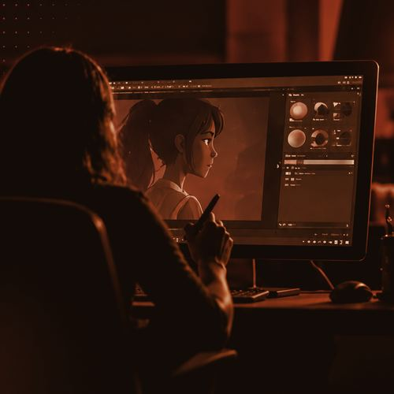
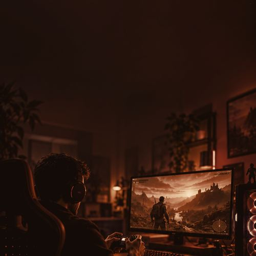
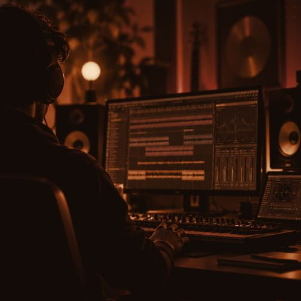
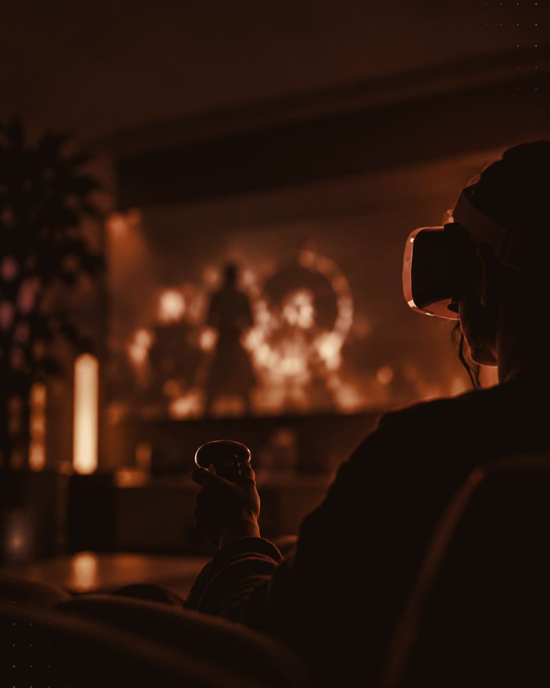

Un territorio para producir. Un ecosistema para crecer.
31°25′ S · 64°11′ O — CENTRO DE ARGENTINA
Ubicada en el centro del país, Córdoba combina conectividad, diversidad geográfica, patrimonio cultural y capacidades productivas.
Córdoba tiene un clima templado y moderado, con las cuatro estaciones definidas: desde paisajes con nieve en invierno hasta temperaturas que pueden alcanzar los 40 °C en verano.
Un territorio. Múltiples escenarios.





Su ubicación en el centro de Argentina, la conectividad aérea y la red vial facilitan el acceso y los desplazamientos entre distintas regiones de la provincia.
Sierras, llanuras, bosques, lagos, salinas, Mar Chiquita, paisajes volcánicos, pequeñas localidades y entornos urbanos, además del legado jesuítico reconocido como Patrimonio Mundial.
Pocas lluvias y extensas horas de luz natural durante el verano ofrecen condiciones para planificar rodajes durante buena parte del año.
Universidades públicas y privadas e instituciones vinculadas con el audiovisual, la animación, los videojuegos y las industrias creativas forman capacidades profesionales en el territorio.
Programas de fomento, Cash Rebate, infraestructura, formación, mercados y acompañamiento institucional para recibir producciones y coproducciones.
Promueve producciones audiovisuales y videojuegos con financiamiento privado mediante el reintegro de gastos elegibles efectuados en Córdoba durante la preproducción, producción y postproducción.
de reintegro para productoras cordobesas y coproducciones nacionales e internacionales.
de reintegro para servicios de producción.
Presupuesto destinado al programa
Inversión total realizada en Córdoba
Producciones: publicidad, largometrajes, series, documentales y animación
Países en coproducciones internacionales
Países: España · México · Puerto Rico · Colombia · Italia · Chile · Uruguay · Estados Unidos · Panamá · Francia
Presupuesto de ARS 2.500 millones, equivalente a aproximadamente EUR 1,4 millones.
Integra audiovisual, animación, videojuegos y música, y promueve la comercialización, exportación y financiación de activos creativos. Acompaña el ciclo de los proyectos desde su desarrollo hasta su llegada al mercado internacional.

Rondas de negocios internacionales · Oferta exportable · Foro de inversión.
Mentorías · Masterclasses · Capacitación.
Conexiones profesionales · Encuentros sectoriales · Espacios de vinculación.
IA generativa · Motores de juego · Captura de movimiento · Audio inmersivo.
PRODUCIR · COPRODUCIR · INVERTIR · DESARROLLAR · CONECTAR
Córdoba ofrece territorio, talento, incentivos, infraestructura y una política audiovisual que conecta desarrollo local con industria internacional.
Tu próximo proyecto puede tener a Córdoba como socio.
Silvina NanoSubdirectora de Industrias Culturales y Coordinadora del Polo Audiovisual Córdoba · Agencia Córdoba Cultura